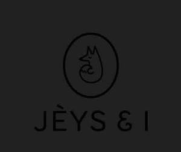

Trade Mark Journal No.2025/010 7 March 2025
UK00004157828 9 February 2025 (25,28,35)

- Class 25
- Baby clothes; Baby layettes for clothing; Clothing for babies; Infant clothing; Clothing for infants; Baby shoes; Maternity clothing; Clothing layettes; Layettes [clothing]; Clothing; Baby doll pyjamas; Knitted baby shoes; Baby bodysuits; One-piece clothing for infants and toddlers; Bootees (woollen baby shoes); Baby sandals; Clothes; Baby boots; Plastic baby bibs; Nappy pants [clothing]; Headbands [clothing]; Headbands for clothing; Woolen clothing; Knitted clothing; Knitwear [clothing]; Cashmere clothing; Baby bottoms; Linen clothing; Garments for protecting clothing; Plush clothing; Babies' pants [clothing]; Furs [clothing]; Aprons [clothing]; Ready-to-wear clothing; Infant wear; Playsuits [clothing]; Embroidered clothing; Silk clothing; Baby tops; Gloves [clothing]; Gloves as clothing; Underpants for babies; Jerseys [clothing]; Mitts [clothing]; Bodies [clothing]; Beach clothing; Jackets [clothing]; Kerchiefs [clothing]; Denims [clothing]; Waterproof clothing; Bottoms [clothing]; Latex clothing; Dance clothing; Baby bibs [not of paper]; Drawers [clothing]; Drawers as clothing; Triathlon clothing; Clothing made of fur; Leather (Clothing of -); Leather clothing; Clothing of leather; Ready-made clothing; Girls' clothing; Fabric belts [clothing]; Wristbands [clothing]; Clothing for gymnastics; Baby pants.
- Class 28
- Doll accessories; Accessories for dolls; Baby playthings; Toys for babies; Baby rattles; Dolls' clothing accessories; Infant toys; Dolls' furniture accessories; Baby swings; Crib toys; Baby rattles incorporating teething rings; Crib mobiles [toys]; Baby gyms; Toys for infants; Infant development toys; Doll clothing; Play mats incorporating infant toys [playthings].
- Class 35
- Online retail services relating to toys; Online retail store services in relation to clothing; Online retail services for downloadable virtual clothing; Online retail store services relating to clothing; Retail store services in the field of clothing; Retail services relating to clothing; Retail services in relation to toys; Wholesale services in relation to clothing; Retail services in relation to clothing; Retail services in relation to clothing accessories; Online retail services relating to clothing; Mail order retail services for clothing.
Aline Simone Mendes Da Fonseca Moreira